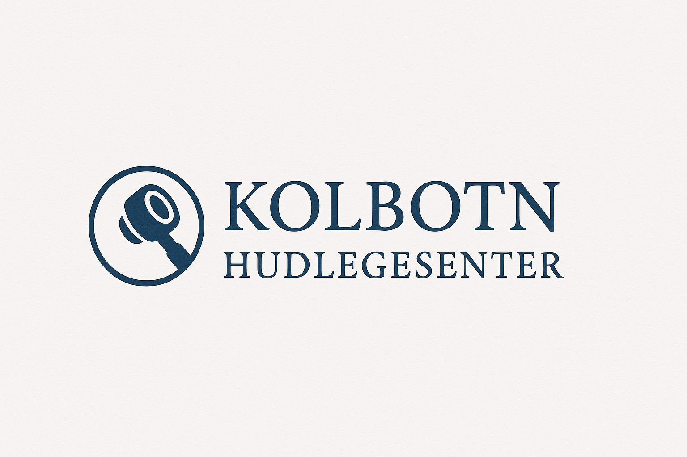

Kontoret holder stengt fra og med onsdag 23. desember til og med søndag 3. januar. Vi åpner igjen mandag 4. januar 2027.
Dette gjelder også lysbehandlingen
Reseptfornyelse før jul
Siste frist for å be om reseptfornyelse før jul er mandag 21. desember.
Pasienter som bruker isotretinoin, alitretinoin eller acitretin
For kvinnelige pasienter som trenger graviditetstest i forbindelse med reseptfornyelse, gjelder følgende frister:
• Blodprøve: senest mandag 21. desember
• Negativ graviditetstest: Må sendes til oss senest tirsdag 22. desember.
Vi anbefaler å være ute i god tid, slik at nødvendige prøvesvar og resepter kan håndteres før juleferien.